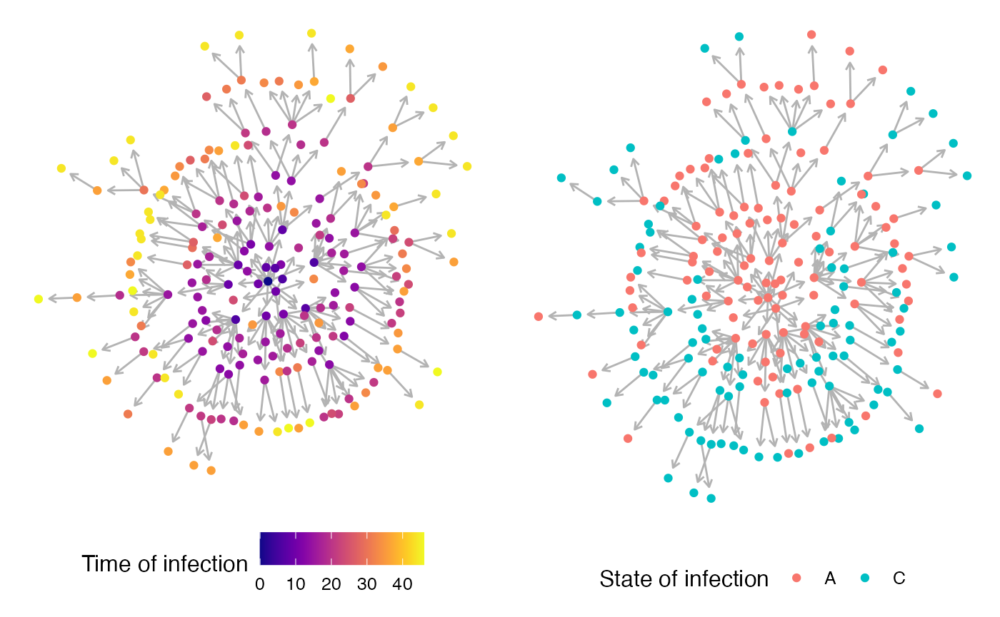
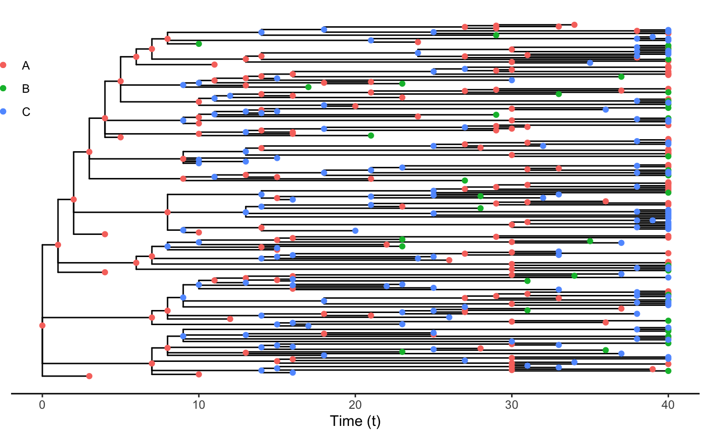
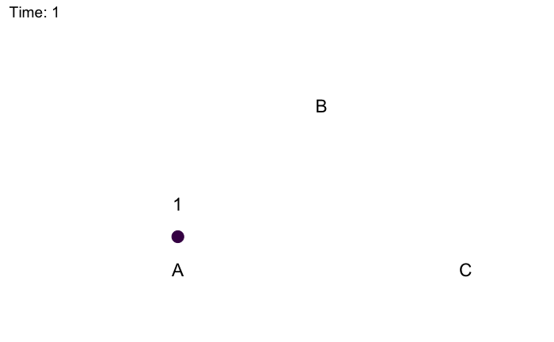
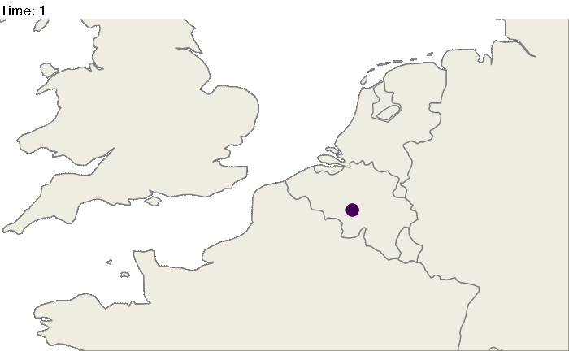
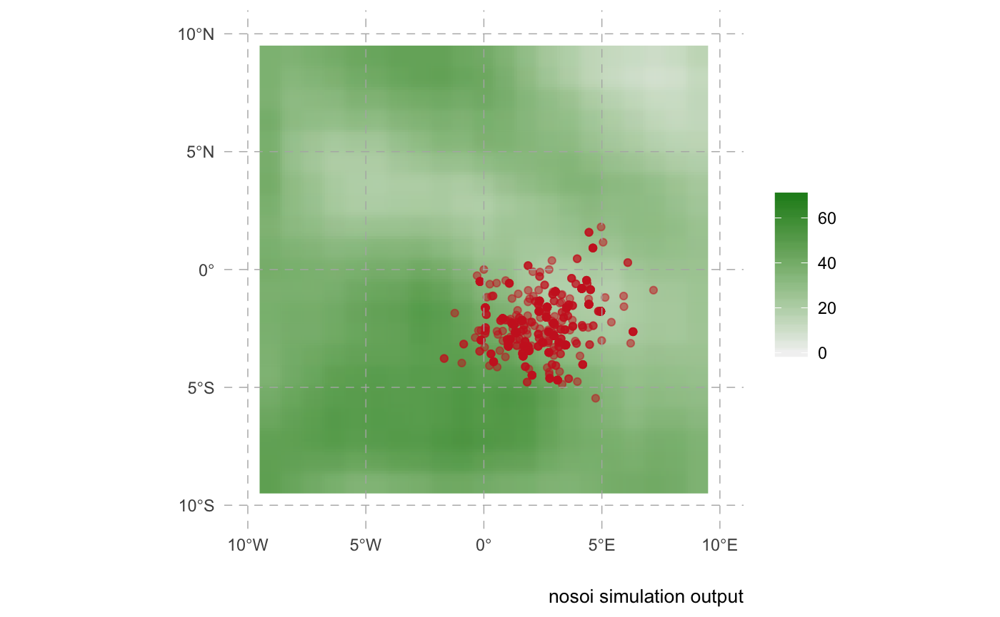
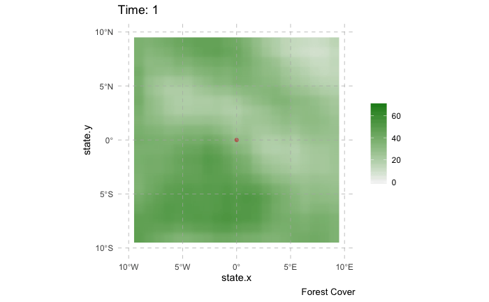

This page presents various ways to visualize a
nosoiSimsimulation output. Because this output contains all the data simulated, you can develop your own visualization procedure. The approaches presented here all rely on external packages.
The transmission chain can be visualized using some of the packages dealing with networks in R, or, alternatively, as a phylogenetic-like tree. For both example, we will use the following simulation:
library(nosoi)
t_incub_fct <- function(x){rnorm(x,mean = 5,sd=1)}
p_max_fct <- function(x){rbeta(x,shape1 = 5,shape2=2)}
p_Move_fct <- function(t){return(0.1)}
p_Exit_fct <- function(t){return(0.05)}
proba <- function(t,p_max,t_incub){
if(t <= t_incub){p=0}
if(t >= t_incub){p=p_max}
return(p)
}
time_contact <- function(t, current.in, host.count){
temp.val = 30 - host.count
if(temp.val <= 0) {
return(0)
}
if(temp.val >= 0) {
if(current.in=="A"){
return(round((temp.val/30)*rnorm(1, 3, 1), 0))}
if(current.in=="B"){return(0)}
if(current.in=="C"){
return(round((temp.val/30)*rnorm(1, 6, 1), 0))}
}
}
transition.matrix = matrix(c(0,0.2,0.4,0.5,0,0.6,0.5,0.8,0),nrow = 3, ncol = 3,dimnames=list(c("A","B","C"),c("A","B","C")))
set.seed(1050)
test.nosoiA <- nosoiSim(type="single", popStructure="discrete",
length=100,
max.infected=200,
init.individuals=1,
init.structure="A",
structure.matrix=transition.matrix,
pMove=p_Move_fct,
param.pMove=NA,
diff.nContact=TRUE,
hostCount.nContact=TRUE,
nContact=time_contact,
param.nContact=NA,
pTrans = proba,
param.pTrans = list(p_max=p_max_fct,
t_incub=t_incub_fct),
pExit=p_Exit_fct,
param.pExit=NA
)To visualize the transmission chain as a network, I typically use igraph with ggnetwork. Keep in mind that the more nodes (i.e. infected hosts) you have, the more messy (or difficult) the visualization will be.
library(ggplot2)
library(viridis)
library(igraph)
library(ggnetwork)
library(ggpubr)
data.sim <- getTableHosts(test.nosoiA, "A")
# To show the graph, we need to invert column 1 and 2, and discard the first line (i.e. the first host,
# because it shows "NA" as infecting host). We then provide *Nosoi* output as elements for the vertices (nodes).
graph.simA <- graph.data.frame(data.sim[-1,c("inf.by","hosts.ID")],directed=T,vertices = data.sim)
graph.simA.network <- ggnetwork(graph.simA, layout = "kamadakawai", cell.jitter = 0.75) #using ggnetwork to provide the layout
#plotting the network (color is time of infection)
plot1 <- ggplot(graph.simA.network, aes(x = x, y = y, xend = xend, yend = yend)) +
geom_edges(color = "grey70",arrow = arrow(length = unit(0.3, "lines"), type = "open")) +
geom_nodes(aes(color=inf.time)) + scale_color_viridis(name="Time of infection",option = "plasma") +
theme_blank()
#plotting the network (color is state the host was infected in)
plot2 <- ggplot(graph.simA.network, aes(x = x, y = y, xend = xend, yend = yend)) +
geom_edges(color = "grey70",arrow = arrow(length = unit(0.3, "lines"), type = "open")) +
geom_nodes(aes(color=inf.in)) + scale_color_discrete(name="State of infection") +
theme_blank()
ggpubr::ggarrange(plot1,plot2,widths = 2, heights = 1, legend="bottom")
An animated version over time can also be rendered:
library(networkDynamic)
library(ndtv)
library(dplyr)
SimulationA <- getTableHosts(test.nosoiA, "A")
SimulationA$numID <- as.numeric(as.factor(SimulationA$hosts.ID)) #gets a unique numeric ID for each host
SimulationA[is.na(out.time),out.time:=(test.nosoiA$total.time)] #active hosts get a "end time" (i.e. the end of the simulation)
#Create "edges" table (line between nodes)
edges = SimulationA[,c("hosts.ID","inf.by","inf.time","out.time")]
colnames(edges) = c("to","from","infected","recovered")
edges$end = rep(test.nosoiA$total.time+1,nrow(edges))
#Create "vertex" table (nodes)
vertex2 = edges %>% group_by(to) %>% mutate(vertex=to)
vertex2 = vertex2[,c("vertex","infected","recovered","end")]
vertex2 = as.data.frame(vertex2)
vertex2$numericID = c(1:nrow(vertex2))
vertex2$infected = as.numeric(vertex2$infected)
vertex2$recovered = as.numeric(vertex2$recovered)
vertex2$end = as.numeric(vertex2$end)
vertex3=vertex2[,c(1,5)]
colnames(vertex3) = c("to","numeric.ID")
test=left_join(edges, vertex3, by=c("to"))
colnames(vertex3) = c("from","numeric.ID")
edges2=left_join(test, vertex3, by=c("from"))
colnames(edges2) = c("to","from","infected","recovered","end","to.num","from.num")
edges2[1,7] = 1
#Create main network using networkDynamic
test.network = networkDynamic(vertex.spells=vertex2[,c(2,4,5)],edge.spells =edges2[,c(3,5,7,6)])
#Animated plot where "active" hosts are red, inactive gray
activate.vertex.attribute(test.network,'color','gray',onset=0,terminus=47)
activate.vertex.attribute(test.network,'color','red',onset=vertex2$infected,terminus=vertex2$recovered)
#Render animation
library(tsna)
saveVideo(render.animation(test.network,vertex.col = "color",
render.par=list(show.time=TRUE),
edge.col = "gray60",
displaylabels=FALSE, render.cache='none',mode="kamadakawai"),video.name="transmission-nosoi.mp4")In this video, nodes (i.e. hosts) come from the center of the network: this does not mean anything in particular and is due to layout constrains. Nodes in red are active (i.e. infectious) hosts whereas nodes in gray are exited hosts. Time steps considered is displayed at the bottom of the frame.
Alternatively, you can visualize the transmission as a phylogenetic-like tree object. You can find here more details. In that case, the “tree” is dated.
library(ggtree)
#Extraction of the full transmission tree from the simulated data
test.nosoiA.tree <- getTransmissionTree(test.nosoiA)
#Plotting the tree using ggtree
ggtree(test.nosoiA.tree) + geom_nodepoint(aes(color=state)) + geom_tippoint(aes(color=state)) +
theme_tree2() + xlab("Time (t)") + theme(legend.position = c(0,0.8),
legend.title = element_blank(),
legend.key = element_blank()) 
The simulation above takes place in a discrete structured population (states are “A”, “B”, “C”). The following animated plot shows the size of active infected hosts in each state as well the migration event ongoing at every time step.
#Packages needed:
library(ggplot2)
library(viridis)
library(igraph)
library(ggnetwork)
library(tidyverse)
library(gganimate)
#Getting the layout for the states
transition.matrix = matrix(c(0,0.2,0.4,0.5,0,0.6,0.5,0.8,0),nrow = 3, ncol = 3,dimnames=list(c("A","B","C"),c("A","B","C")))
melted.transition.matrix <- reshape2::melt(transition.matrix, varnames = c("from","to"),value.name="prob", as.is = TRUE) #melting the matrix go get from -> to in one line with probability
melted.transition.matrix = subset(melted.transition.matrix, prob!=0)
graph.Matrix <- graph.data.frame(melted.transition.matrix,directed=T)
layout <- ggnetwork(graph.Matrix, layout = "circle",arrow.gap=0.18)[c(1:3),c(1,2,4)] #using ggnetwork to provide the layout
#Loading data from the simulation
test.nosoiA.data <- getTableState(test.nosoiA)
#Loop to get the number of infected in each state per unit of time
results <- data.frame()
for (i in 1:max(test.nosoiA.data$time.from)) {
temp <- subset(test.nosoiA.data, time.from <= i & c(time.to > i |is.na(time.to)))[,c("hosts.ID","state")]
temp$time <- i
results <- data.table::rbindlist(c(list(temp),list(results)))
}
test2 <- results %>% group_by(time,state) %>% summarise(N=length(hosts.ID)) %>% left_join(layout,by=c("state"="vertex.names"))
#Loop to get the transitions between states and their time
results2=data.frame()
for (i in unique(test.nosoiA.data$hosts.ID)) {
subset.current <- test.nosoiA.data[i]
if(nrow(subset.current) > 1){
for (j in 1:(nrow(subset.current)-1)){
temp <- data.table(hosts.ID=i,time=as.integer(subset.current[j]$time.to),from=subset.current[j]$state,to=subset.current[j+1]$state)
results2 <- data.table::rbindlist(c(list(temp),list(results2)))
}}}
test3 <- results2 %>% group_by(time,from,to) %>% summarise(N=length(hosts.ID)) %>% left_join(layout,by=c("from"="vertex.names")) %>% left_join(layout,by=c("to"="vertex.names"),suffix=c("from","to"))
#Animated plot (using gganimate):
animated.plot <- ggplot() +
geom_point(data=test2,aes(x,y, color=state,size=N)) +
geom_curve(data=test3, aes(x=xfrom,y=yfrom,xend=xto,yend=yto),arrow = arrow(length = unit(0.03, "npc"),type = "closed"),curvature = 0.2,color="gray50") +
scale_color_viridis(guide=FALSE,discrete=TRUE) + theme_blank() + ylim(-0.5,1.2) + xlim(-0.5,1.2) + geom_text(data=layout,aes(x=x,y=y-0.2,label = vertex.names), size = 6,color="black") +
geom_text(data=test2,aes(x=x,y=y+0.2,label = N), size = 6,color="black") +
transition_states(time) + scale_size_continuous(guide=FALSE,range = c(5, 30)) +
labs(title = "Time: {closest_state}")
animate(animated.plot, nframes=test.nosoiA$total.time*2+10,duration=40,end_pause=10)
Of course, these 3 locations could correspond to particular geographic areas, for example the Benelux region (Belgium, the Netherlands and Luxembourg). The code above could be easily modified:
library(dplyr)
countries.centroids <- data.frame(name=c("Belgium","Netherlands","Luxembourg"),
lat=c(50.503887,52.132633,49.815273),
long=c(4.469936,5.291266,6.129583),
state=c("A","B","C"))
#from previous code, adding the new coordinates
test2.bis = left_join(test2,countries.centroids)
test3.bis = left_join(test3,countries.centroids,by=c("from" = "state"))
test3.bis = left_join(test3.bis,countries.centroids,by=c("to" = "state"), suffix=c("from","to"))
#worldmap
worldmap <- ggplot2::borders("world", colour="gray50", fill="#efede1",t=1:182)
library(gganimate)
#Animated plot (using gganimate):
animated.plot <- ggplot() +
theme_void() + worldmap + coord_cartesian(xlim = c(-5,10), ylim= c(48,54)) +
geom_point(data=test2.bis,aes(long,lat, color=state,size=N)) +
geom_curve(data=test3.bis, aes(x=longfrom,y=latfrom,xend=longto,yend=latto),arrow = arrow(length = unit(0.03, "npc"),type = "closed"),curvature = 0.2,color="gray50") +
scale_color_viridis(guide=FALSE, discrete=TRUE) +
transition_states(time) + scale_size_continuous(guide=FALSE,range = c(5, 30)) +
labs(title = "Time: {closest_state}")
animate(animated.plot, nframes=test.nosoiA$total.time*2+10,duration=40,end_pause=10)
Similarly one can try to represent the spread of pathogen in a continuous space. Here, we will generate a random raster for the purpose of this tutorial, but you can use a “real” world raster and simulate your epidemic on it ( see this example ).
#Generating the raster
library(raster)
set.seed(860)
test.raster <- raster(nrows=100, ncols=100, xmn=-50, xmx=50, ymn=-50,ymx=50)
test.raster[] <- runif(10000, -80, 150)
test.raster <- focal(focal(test.raster, w=matrix(1, 5, 5), mean), w=matrix(1, 5, 5), mean)
library(nosoi)
#Starting position will be
start.pos <- c(0,0) # c(x,y)
#pExit
p_Exit_fct <- function(t, current.env.value){
if(current.env.value > 60){p=0.02}
if(current.env.value < 60 && current.env.value > 30){p=0.04}
if(current.env.value < 30){p=0.08}
return(p)
}
#pMove
p_Move_fct <- function(t){return(0.1)}
#sdMove
sd_Move_fct <- function(t){return(0.9)}
#nContact
n_contact_fct = function(t){abs(round(rnorm(1, 0.5, 1), 0))}
#pTrans
proba <- function(t,p_max,t_incub){
if(t <= t_incub){p=0}
if(t >= t_incub){p=p_max}
return(p)
}
t_incub_fct <- function(x){rnorm(x,mean = 5,sd=1)}
p_max_fct <- function(x){rbeta(x,shape1 = 5,shape2=2)}
param_pTrans = list(p_max=p_max_fct,t_incub=t_incub_fct)
# Starting the simulation ------------------------------------
set.seed(846)
SimulationA <- nosoiSim(type="single", popStructure="continuous",
length.sim=300, max.infected=500, init.individuals=1,
init.structure=start.pos,
structure.raster=test.raster,
pExit = p_Exit_fct,
param.pExit = NA,
timeDep.pExit=FALSE,
diff.pExit=TRUE,
pMove = p_Move_fct,
param.pMove = NA,
timeDep.pMove=FALSE,
diff.pMove=FALSE,
sdMove = sd_Move_fct,
param.sdMove = NA,
timeDep.sdMove=FALSE,
diff.sdMove=FALSE,
attracted.by.raster=TRUE,
nContact=n_contact_fct,
param.nContact=NA,
timeDep.nContact=FALSE,
diff.nContact=FALSE,
pTrans = proba,
param.pTrans = list(p_max=p_max_fct,t_incub=t_incub_fct),
timeDep.pTrans=FALSE,
diff.pTrans=FALSE,
prefix.host="H",
print.progress=FALSE,
print.step=10)The following plot gives a static representation of all positions occupied by all hosts during the simulation:
library(ggplot2)
library(ggspatial)
test <- getTableState(SimulationA)
ggplot() +
layer_spatial(test.raster) +
scale_fill_gradient(low = "gray95", high = "forestgreen", limits=c(0,NA),na.value="white", name=NULL) +
theme(panel.background = element_blank(),
panel.ontop = TRUE,
panel.grid.major = element_line(size = 0.25, linetype = 'dashed',colour = "grey70"),
axis.ticks=element_blank(),
plot.caption=element_text(size=10)) +
labs(caption = "nosoi simulation output",x="",y="") + xlim(c(-10,10)) + ylim(c(-10,10)) +
geom_spatial_point(data=test,aes(state.x,state.y),color="firebrick3",alpha=0.5)
This representation can be a little messy however, and not very informative. Using the time information, one can represent the dynamics of the spreads using an animated representation:
library(ggplot2)
library(ggspatial)
library(gganimate)
test <- getTableState(SimulationA)
#Following script gives the position of every host at every time point
results <- data.frame()
for (i in 1:max(test$time.from)) {
temp = subset(test, time.from <= i & c(time.to > i |is.na(time.to)))[,c("hosts.ID","state.x","state.y","current.env.value")]
temp$time = i
results=data.table::rbindlist(c(list(temp),list(results)))
}
animated.plot2 <- ggplot() +
layer_spatial(test.raster) +
scale_fill_gradient(low = "gray95", high = "forestgreen", limits=c(0,NA),na.value="white", name=NULL) +
labs(caption = "Forest Cover") +
geom_point(data=results,aes(state.x,state.y),show.legend = FALSE,color="firebrick3",alpha=0.5) + transition_states(time) +
theme(panel.background = element_blank(),
panel.ontop = TRUE,
panel.grid.major = element_line(size = 0.25, linetype = 'dashed',colour = "grey70"),
axis.ticks=element_blank(),
plot.caption=element_text(size=10)) + xlim(c(-10,10)) + ylim(c(-10,10)) +
labs(title = "Time: {closest_state}")
gganimate::animate(animated.plot2, nframes=SimulationA$total.time*2+10,duration=40,end_pause=10)